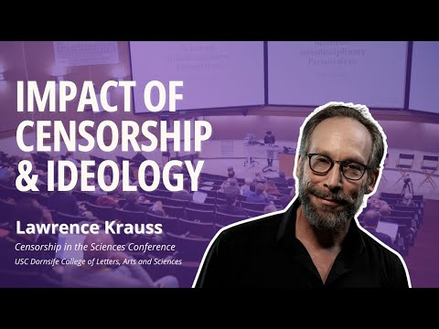
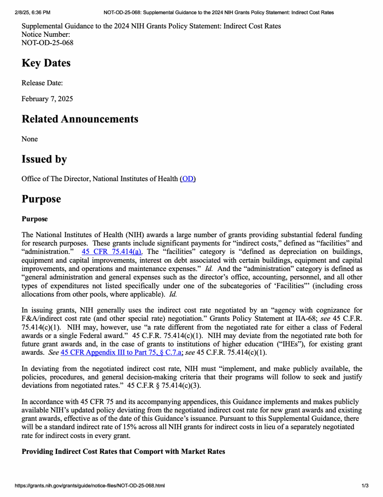

1:10:44 · 10 OPERE
Il terremoto politico che sta avvenendo negli USA ed il controllo di massa attraverso l'opinione.
Il filo del discorso
Il relatore interpreta i primi provvedimenti della seconda amministrazione Trump come un terremoto politico e un’occasione per verificare come viene speso il denaro pubblico. I riferimenti al gennaio 2025, a USAID e al nuovo tetto NIH sui costi indiretti collocano il discorso nel febbraio 2025, senza stabilire da soli un giorno preciso. Il confronto fra comunicazioni ufficiali e media diventa il punto di partenza di una tesi più ampia: il controllo dell’opinione opererebbe anche attraverso etichette, semplificazioni e abitudini che scoraggiano la discussione. Questa è l’interpretazione del relatore; la scheda non considera le comunicazioni del governo vere per definizione. Una lunga parte dedicata a Platone distingue la disponibilità a ragionare dalla semplice ripetizione di formule. Le dottrine non scritte e la scuola di Tubinga introducono una lettura attenta a ciò che un testo suggerisce oltre l’esposizione immediata. Erodoto, Omero, Troia e Gerico spostano poi il tema sui rapporti fra storia, mito e interpretazione. I ritrovamenti archeologici possono illuminare il contesto dei racconti, ma non confermano automaticamente ogni episodio. Il caso Pasolini porta alla stessa esigenza di distinguere ipotesi, testimonianze e sentenze: la convinzione personale del relatore non cancella la condanna di Pelosi o sostituisce l’accertamento di altri responsabili. Le affermazioni finanziarie richiedono correzioni puntuali. Le presunte somme personali attribuite a Chelsea Clinton non risultano provate dalle fonti consultate; il documento CHAI controllato riporta compensi zero. BBC Media Action va distinta da BBC News. Il video sui pagamenti milionari agli attori in Ucraina è stato disconosciuto da E! News e Stiller ha negato di essere stato pagato. Anche l’esempio degli overhead universitari confonde l’aliquota applicata a una base di costi diretti con una percentuale dell’intero finanziamento: i costi indiretti comprendono infrastrutture e servizi, oltre l’amministrazione. L’annuncio NIH del 7 febbraio è identificato probabilmente, senza presentarlo come disciplina certamente vigente oggi. Nella parte finale, Bernays, Jung e Freud servono al relatore per descrivere persuasione, appartenenza e regressione. Questi richiami non autorizzano diagnosi psichiatriche dei dissenzienti. La scheda distingue inoltre critica al governo israeliano, sostegno ai palestinesi e sostegno a Hamas; non adotta la negazione dell’esistenza dei palestinesi, incompatibile con una lettura rigorosa delle fonti storiche. L’anello di Gige, Kant, Antigone e il bispensiero orwelliano riportano alla responsabilità del giudizio. La battuta della Regina sulle cose impossibili prima di colazione viene ricondotta ad Attraverso lo specchio. La conclusione resta un auspicio politico del relatore: un cambiamento delle istituzioni può diventare occasione di autonomia solo se la verifica dei fatti non si ferma alle appartenenze.
I libri nel discorso

Apologia di Socrate
Identificazione probabile
Copertina del volume Apologia di Socrate. Critone: BUR · Apologia di Socrate. Critone · a cura di Maria Michela Sassi, 1993
Copertina autentica del volume BUR contenente Apologia di Socrate e Critone. Il secondo titolo non è aggiunto come citazione del video; l’autore del testo è Platone, con Socrate come figura protagonista.
La difesa di Socrate e, da 3596 secondi, l’accusa contro di lui richiamano probabilmente l’Apologia. Il titolo non è pronunciato e il discorso parla anche di più dialoghi: non identificazione certa.
Passaggio 7:22 ↗ · Fonti e libro ↗
Bibbia
Copertina: San Paolo, 2014 · Nuova Versione dai Testi Antichi · edizione di riferimento
Bibbia e pensiero biblico sono nominati nel confronto con Omero e l’archeologia di Gerico. Non è una prova dell’esattezza storica di ogni episodio del testo.
Passaggio 17:38 ↗ · Fonti e libro ↗
La fattoria degli animali
Identificazione probabile
Copertina: A. Mondadori Scuola · edizione scolastica
La massima inglese sugli animali più uguali degli altri identifica La fattoria degli animali. Titolo e autore non sono pronunciati qui: identificazione testuale probabile.
Passaggio 36:27 ↗ · Fonti e libro ↗
Lawrence Krauss Exposes the Censorship Crisis Gripping Academia (intervento alla conferenza Censorship in the Sciences)
Identificazione probabile
Miniatura originale dell’intervento audiovisivo di Lawrence Krauss: Heterodox Academy · video collegato dagli organizzatori il 29 gennaio 2025 · convegno USC 10–12 gennaio 2025
Miniatura originale della registrazione ufficiale, non una copertina libraria. La data del post degli organizzatori non viene spacciata per data certa di caricamento del video. I contenuti polemici e i motivi attribuiti a Krauss restano del relatore, non sono confermati dalla sol’identificazione del convegno.
Krauss, gennaio 2025 e censorship gripping academia convergono sulla clip Heterodox Academy collegata dagli organizzatori USC: titolo abbreviato, identificazione probabile.
Passaggio 42:21 ↗ · Fonti e libro ↗
Supplemental Guidance to the 2024 NIH Grants Policy Statement: Indirect Cost Rates (NOT-OD-25-068)
Identificazione probabile
Prima pagina dell’avviso NIH, copia istituzionale del febbraio 2025: NIH · avviso 7 febbraio 2025 · copia PDF istituzionale Boise State, stampata 8 febbraio 2025
Prima pagina del documento, dalla copia pubblicata dall’ateneo. È dichiarata una copia a stampa dell’avviso web, non un frontespizio originario, una sentenza o una norma certamente vigente oggi. Il 15% è un’aliquota di rimborso, non la percentuale necessaria di ogni fondo destinata agli stipendi amministrativi.
Il tetto appena annunciato del 15% ai costi indiretti della ricerca corrisponde probabilmente all’avviso NIH del 7 febbraio 2025; numero e titolo non sono detti.
Passaggio 44:59 ↗ · Fonti e libro ↗
La Repubblica
Copertina: Laterza · La Repubblica · edizione con testo a fronte di riferimento
Immagine associata all’ISBN di riferimento e controllata visivamente; edizione e traduzione non identificate come quelle citate o lette nel video.
La Repubblica e l’anello di Gige sono nominati esplicitamente. Il precedente richiamo a Trasimaco, intorno a 1383 secondi, appartiene alla stessa opera.
Passaggio 1:00:42 ↗ · Fonti e libro ↗
Risposta alla domanda: che cos’è l’Illuminismo?
Identificazione probabile
Copertina della raccolta che comprende il saggio sull’Illuminismo: Firenze University Press · Sette scritti politici liberi · 2011 · a cura di Maria Chiara Pievatolo
Copertina del volume cartaceo FUP che comprende il saggio, riscontrato dal catalogo universitario. L’ISBN appartiene alla raccolta; il filmato non annuncia un’edizione e il titolo del saggio è un’identificazione probabile della citazione.
Kant e il coraggio dell’autonomia richiamano probabilmente Risposta alla domanda: che cos’è l’Illuminismo? Il titolo non è pronunciato; non è presentato come citazione diplomatica.
Passaggio 1:01:45 ↗ · Fonti e libro ↗
Antigone
Copertina: Einaudi · Collezione di teatro · edizione di riferimento
Immagine associata all’ISBN di riferimento e controllata visivamente; edizione e traduzione non identificate come quelle citate o lette nel video.
Sofocle e Antigone sono nominati nel confronto fra pericoli naturali e azioni umane. La formula del terribile è lettura del celebre coro, non una classifica statistica dei disastri.
Passaggio 1:04:00 ↗ · Fonti e libro ↗
1984
Identificazione probabile
Copertina: Newton Compton · edizione illustrativa
Il bispensiero orwelliano identifica probabilmente il concetto di doublethink in 1984; titolo del romanzo non pronunciato.
Passaggio 1:08:05 ↗ · Fonti e libro ↗
Attraverso lo specchio e quel che Alice vi trovò
Identificazione probabile
Copertina: Alter Ego Edizioni · Gli Eletti · Attraverso lo specchio
Immagine autentica dell’opera, controllata visivamente; l’edizione di riferimento non è attribuita al filmato.
La Regina e le cose impossibili prima di colazione corrispondono al capitolo V di Attraverso lo specchio. Il video dice Alice nel paese delle meraviglie: attribuzione del passo corretta e identificazione probabile.
Passaggio 1:08:23 ↗ · Fonti e libro ↗